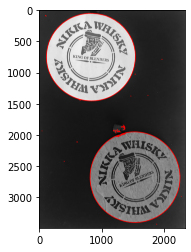

本記事はQrunchからの転載です。
OpenCVのfindContoursで見つけた輪郭はdrawContoursで簡単に描画できます。 次のようにして使えます。
drawed = cv2.drawContours(img,
contours=contours,
contourIdx=-1,
color=(255, 0, 0),
thickness=10,
lineType=8,
hierarchy=hierarcies,
maxLevel=1)
引数の意味はそれぞれ次のとおりです。必須なのはcolorまでです。
| 引数 | 意味 |
|---|---|
| contours | findContoursで見つかった輪郭 |
| contourIdx | 描画する輪郭のインデックスを指定する（-1だと全て描画） |
| color | 描画する輪郭の色 |
| thickness | 描画する輪郭の太さ |
| lineType | 4、8、cv2.LINE_AAのどれかを指定し、後のほうがきれいに描画される |
| hierarchy | findContoursで見つかった輪郭の階層構造 |
| maxLevel | 描画する最大の階層を指定する |
maxLevelを1にしたときと、2にしたときの違いを次に示します。
| maxLevel=1 | maxLevel=2 |
|---|---|
|  | 
|
maxLevelが2のときには外側の輪郭の中まで輪郭が描画されていますね。